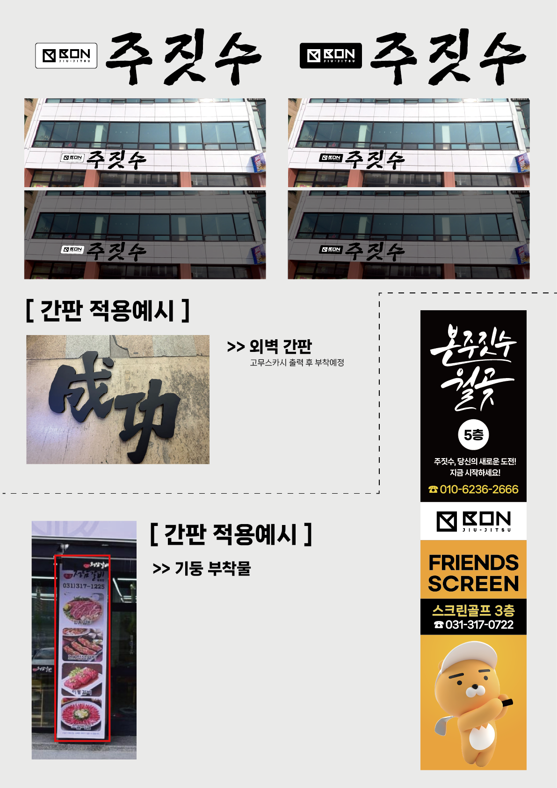
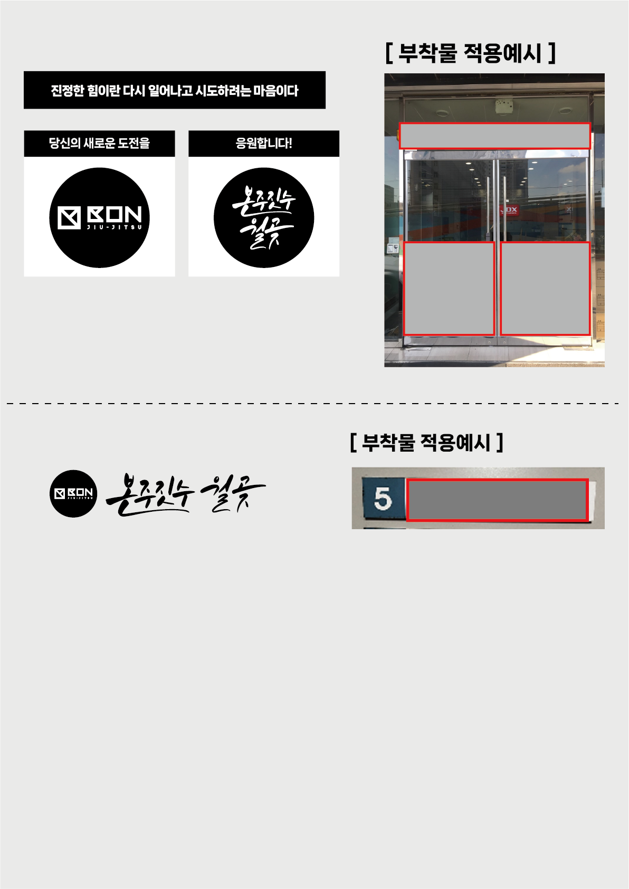
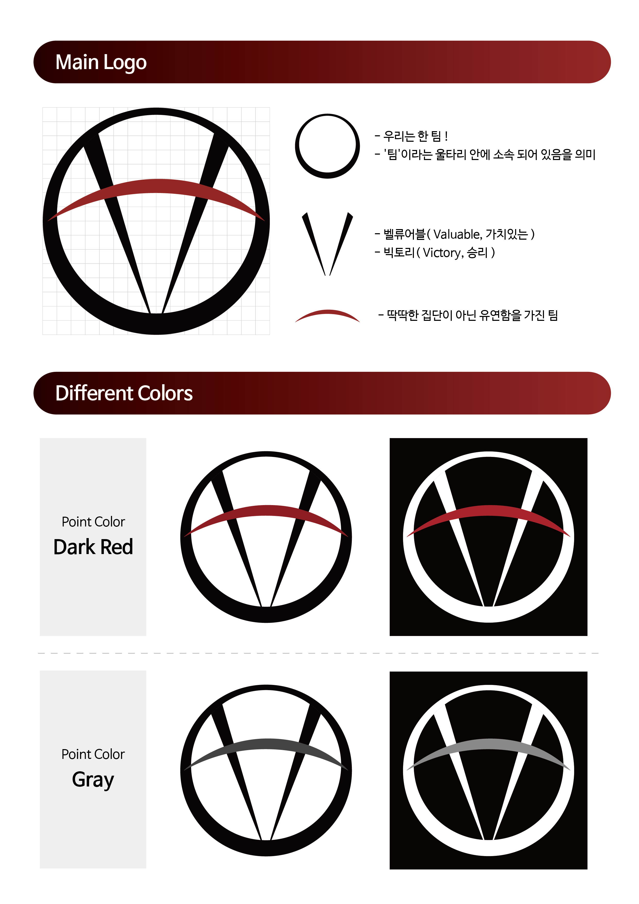
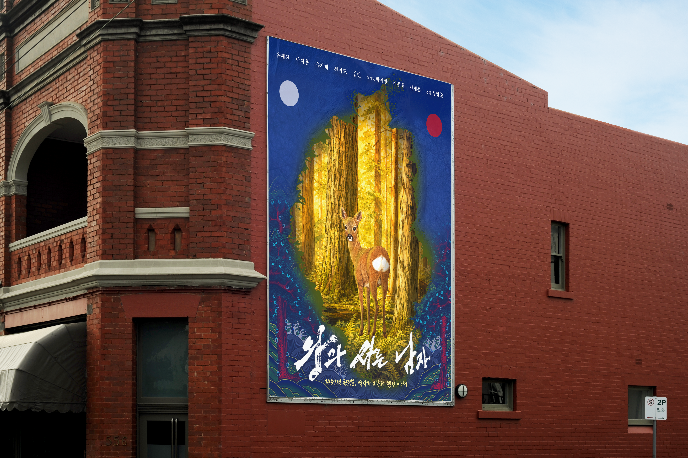

Work 01
Web & Game UI/UX


게임 UI/UX 개발 'SS급 대학원생'
밈(Meme)과 장르의 결합으로 탄생한 UI/UX
아이디어의 시작
웹소설/웹툰의 클리셰와 대중적인 밈 문화에서 영감을 받아 친숙한 몰입감을 주는 게임 UI를 구상했습니다.
콘셉트 도출
'SS급'이라는 키워드와 대학원생의 현실적인 고민을 결합해 미소녀 연애 시뮬레이션 장르의 선택지 시스템으로 풀어냈습니다.
구현 결과
대사창, 호감도 시스템, 진로 선택 분기점 등을 직관적으로 설계하여 친숙하면서도 신선한 사용자 경험을 제공하고자 했습니다.
Work 02
Branding & Physical Design



건물 외내부 간판 디자인 '본주짓수 월곶점'
처음 시도한 건물 외부와 내부 디자인
아이디어의 시작
매장의 브랜드 스토리와 주변 경관의 조화를 고려해 Black&White 컬러와 캘리그라피 느낌의 타이포그래피를 선정했습니다.
실측 및 설계
주/야간 시인성을 고려한 캘리브레이션 작업과 아크릴, 플라스틱, 스티커 등 실제 소재 매칭을 함께 진행했습니다.
인사이트
스크린 디자인과 인쇄/실물 디자인의 차이를 이해하고, 실제 공간 안에서 보이는 스케일감을 체득하는 계기가 되었습니다.
Work 03
Concept Design



비주얼 콘셉트 디자인 '브랜드 무드 확장'
이미지와 메시지를 연결하는 디자인 실험
방향 설정
작업물의 목적과 분위기에 맞춰 컬러, 타이포그래피, 이미지 톤을 정리하고 시각적인 흐름을 구성했습니다.
제작 과정
여러 이미지 시안을 비교하면서 정보가 잘 읽히는 구도와 사용자가 편안하게 받아들일 수 있는 화면 밀도를 조정했습니다.
배운 점
시각적으로 예쁜 화면을 넘어서 목적에 맞는 메시지를 전달하는 것이 디자인 완성도를 높인다는 점을 경험했습니다.